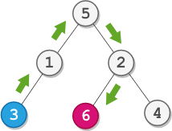

| Category | Difficulty | Likes | Dislikes |
|---|---|---|---|
| Algorithms | Medium | 3226 | 168 |
databricks | amazon | tiktok | snowflake | google
You are given the root of a binary tree with n nodes. Each node is uniquely assigned a value from 1 to n. You are also given an integer startValue representing the value of the start node s, and a different integer destValue representing the value of the destination node t.
Find the shortest path starting from node s and ending at node t. Generate step-by-step directions of such path as a string consisting of only the uppercase letters 'L', 'R', and 'U'. Each letter indicates a specific direction:
'L' means to go from a node to its left child node.'R' means to go from a node to its right child node.'U' means to go from a node to its parent node.Return the step-by-step directions of the shortest path from node s to node t.
Example 1:

Input: root = [5,1,2,3,null,6,4], startValue = 3, destValue = 6
Output: "UURL"
Explanation: The shortest path is: 3 → 1 → 5 → 2 → 6.Example 2:
Input: root = [2,1], startValue = 2, destValue = 1
Output: "L"
Explanation: The shortest path is: 2 → 1.
Constraints:
n.2 <= n <= 1051 <= Node.val <= n1 <= startValue, destValue <= nstartValue != destValue